Soportes
Patron del soporte
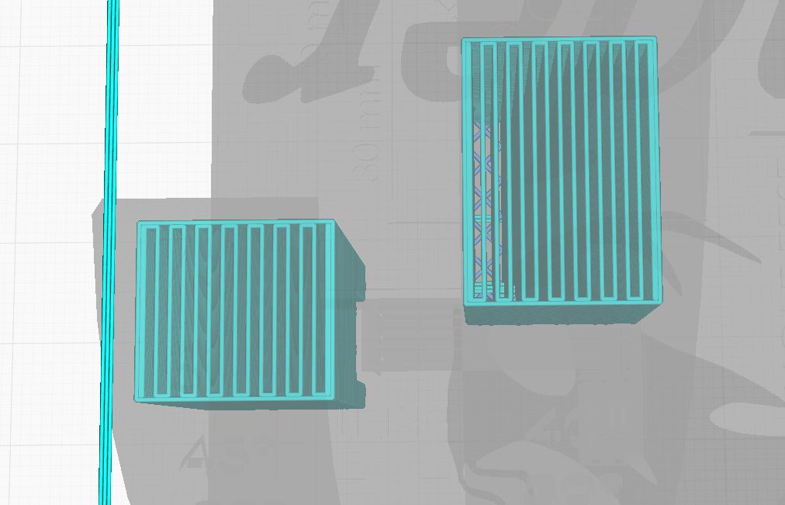- Grid / Triangles los más robustos
- zigzag / lines los más faciles de retirar
- Zigzag / lines recomendado
Densidad del soporte
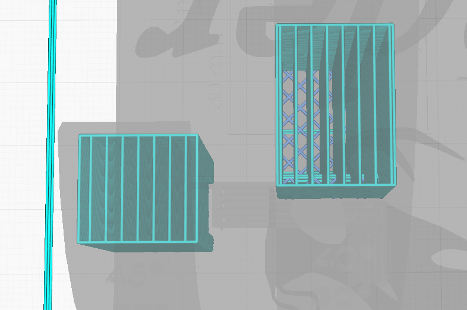- Depende la complejidad de la pieza
- Intentar el menor posible
- Ayuda o dificulta retirarlo
- Recomendado entre 5 y 10 %
Distancias XY/Z
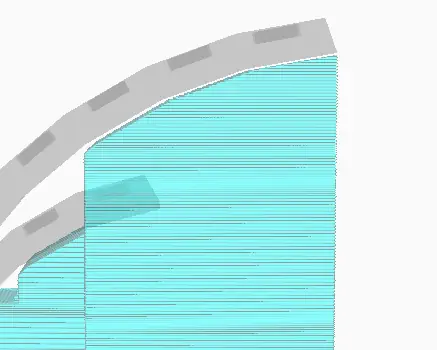- La separacion XY hará que no se peguen los overhangs
- Distancia XY ideal: 1 o 2 anchos de perímetro (width)
- Poca separación en Z evitará que se pegue la pieza al soporte
- Mucha separación en Z podría hacer que el soporte no se pegue, o la pieza se deforme
- Distancia Z ideal. 2 o 3 alturas de capa (height)
Interfaz de soporte
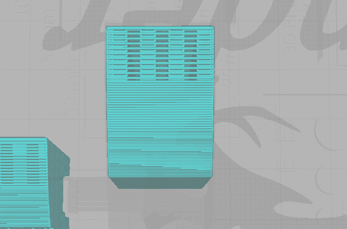- Genera un 'piso' en el soporte para apoyar la pieza
- Mejor para la calidad de la pieza en contacto al soporte
- Aveces mas dificil de despegar, comprometiendo la pieza
Ubicación de soportes

- Everywhere: En todos lados, aveces dificulta sacar todos los soportes
- Touching Buildplate: Normalmente es ideal, depende de la pieza
- Soportes pintables: El cura y el prusaslicer tienen herramientas para personalizar el soporte, poniendola sóla en las areas críticas.
Soporte normal o árbol
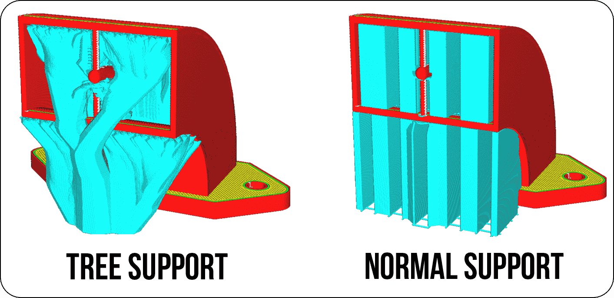- El soporte lineal o normal es mas fuerte, aporta estabilidad
- Los soportes en arbol son mas frágiles, con menos puntos de contacto con la pieza
- El arbol tiene la ventaja de reducir la cantidad de material, tiempo y mas fáciles de remover.
- Depende de la pieza será el tipo de soporte que utilicemos.
Soporte árbol
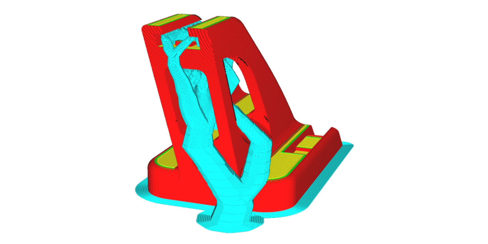- Mas faciles de sacar, mejora la superficie de la pieza y menor tiempo/material
- Incrementa el tiempo de slicing
- Puede llegar a romperse el soporte en la mitad de la impresion
- Probar anchos y ángulos mayores a 4mm y 45°
Aunque no siempre remover los soportes es fácil, llegando a unas buenas configuraciones puede simplificar el sacar los soportes, manteniendo un menor margen de error, y conservando la calidad de la pieza impresa.
Humedad en el filamento
1
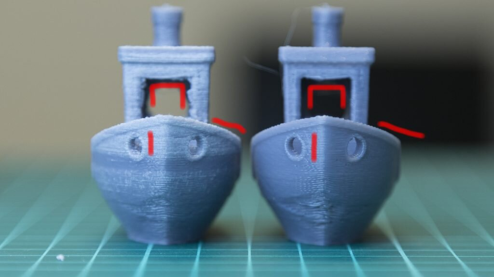- Burbujas en la pieza
- Lineas inconsistentes
2
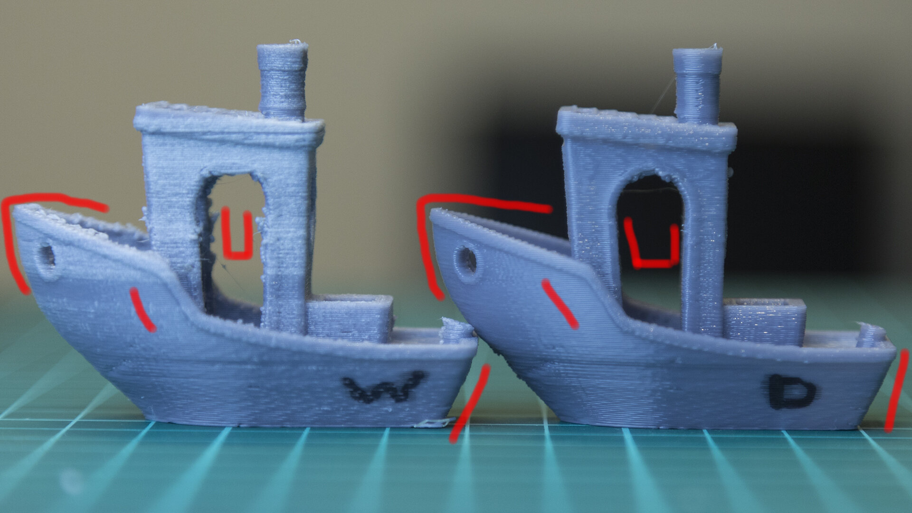- La pieza no se ve solida
- Extra 'lag' en la extrusion
3
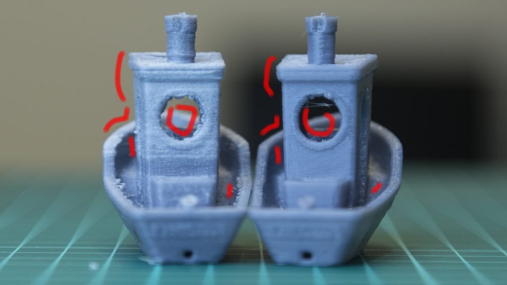- Malos inicios/finales de capa
- Lineas con algun 'zigzag'
En este caso, la pieza es ABS, una está con el material con humedad y el otro está seco. El gcode es
exactamente el mismo, en la misma impresora, solo se cambió el material.
La humedad atrapada dentro del filamento, al calentarse en el extrusor generan pequeñas burbujas de vapor que
empujan el material, lo cual hace que salga desparejamente o cuando no tendría que salir, y deja algunas
burbujas dentro del material cuando sobrecalentado
En muchos materiales es crítico, como ABS o PVA, aunque en los materiales mas utilizados ( PLA y PETG ) es
menos severo, es algo que sí los afecta. Lo recomendado sería guardarlo en sus ziploc o tuppers con sílica gel,
o algo que los pueda mantener secos.
Temperatura de impresion
Temperatura alta
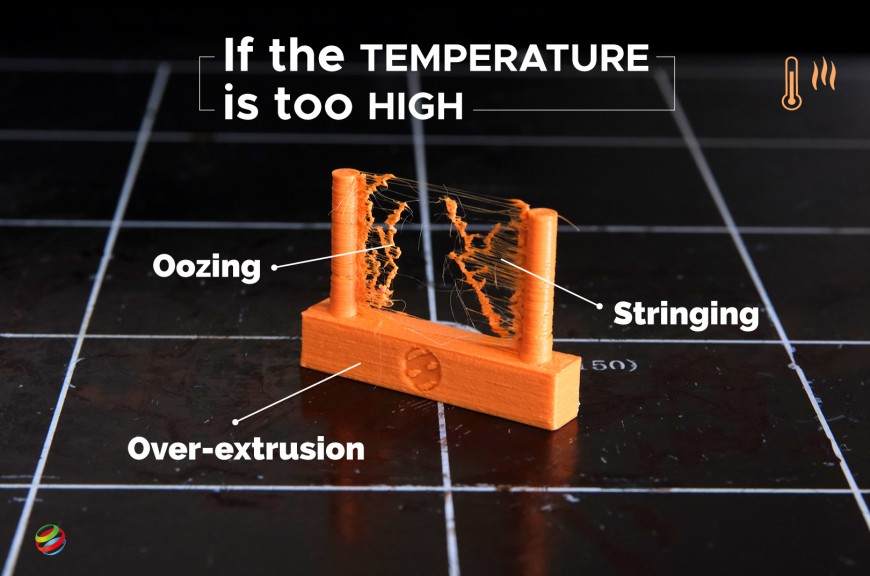- Facilita la salida de material
- Permite velocidades mas altas
- Mejora la adhesion entre capas ( objeto mas resistente )
- Genera sobre extrusion, hilos y gotas
Temperatura baja
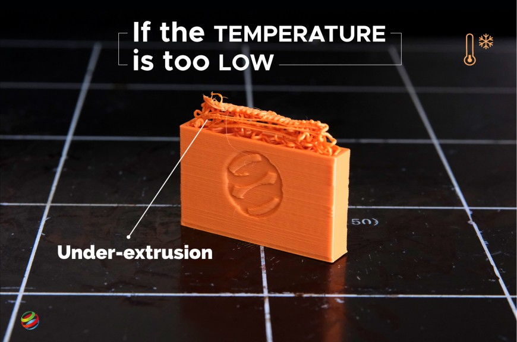- Mejora la definicion del objeto
- Mejora en los overhangs
- Puede generar falta de material
- Limita la velocidad de impresion
Torre de temperaturas
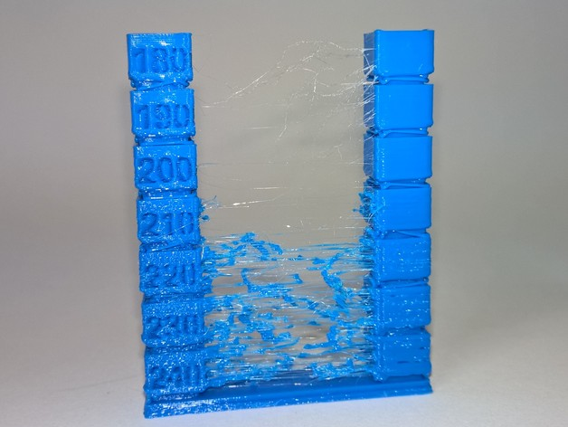- Sirve para encontrar tu temperatura ideal
- Empezar con la máxima temperatura
- Bajar la temperatura 5° cada vez
- Buscar en el resultado la mejor sección
Temperatura de la plataforma
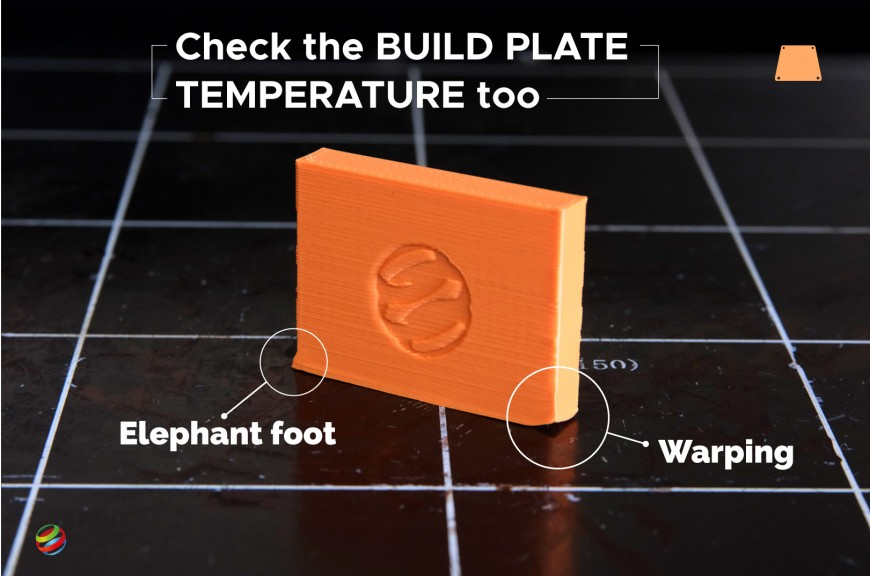- Si es muy baja se puede despegar o generar warping
- Si es demaciado alta puede generar pata de elefante
- La temperatura ideal evita estos dos
Warping / Pandeo
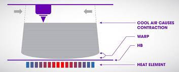- Al enfriarse, se contrae y se levanta
- Especialmente con materiales con mayor contracción
- Depende también de la temperatura ambiente
- Influye más con el tamaño de la pieza
Temperatura ambiente
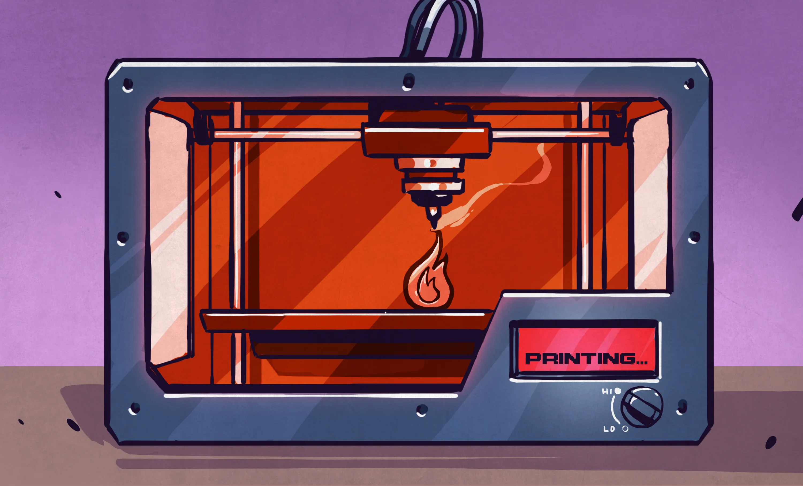- Clave para solucionar problemas con materiales con alto indice de contracción o alta rigidez
- Por ejemplo: ABS, PETG, PC, PEI o PEEK
- Evita el warping, delaminaciones o tensiones internas entre capas
- Poco beneficioso en otros materiales como PLA
Aunque hay una gran variedad de termoplásticos para imprimir, el más usual de todos es PLA, que es el mas sencillo de imprimir y tiene temperaturas bajas de impresion Hotend (180-210) Bed (40-50), aunque está popularizándose el PETG H(230-250) B(60-80) que no necesariamente tenga que tener un ambiente controlado, se puede ventilar, tiene muy buenas propiedades, y es relativamente facil de imprimir. El ABS H(230-280) B(70-110) no puede ventilarse, necesita ambiente calefaccionado, y muy buenas propiedades y resistencia del material.
Nozzle
Tipos de Nozzle
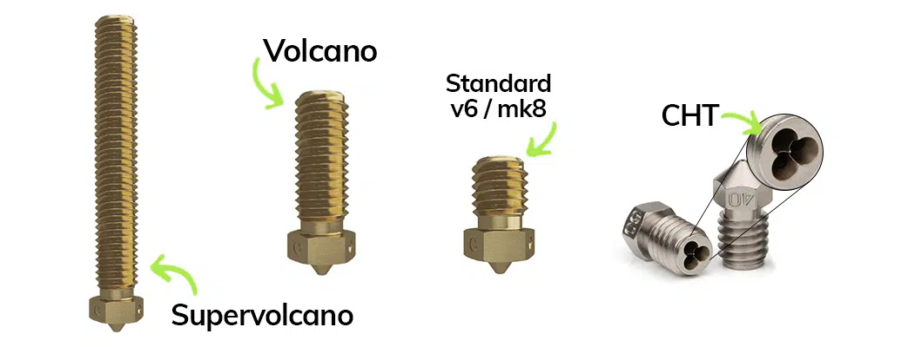- Estandar: 12 a 13mm de largo
- Volcano: de 21mm, mayores temp y velocidades
- Supervolcano: son variadas, las mejores en flujo de material
- CHT: tienen un triple orificio de entrada que mejora el flujo
Materiales de nozzles
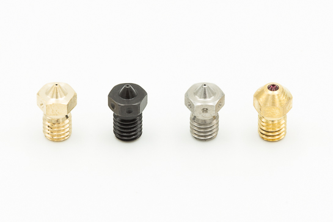- Latón: Es el más usado, Gran conductividad, alto desgaste ( sobre todo con materiales cargados, o con fibras abrasivas )
- Acero endurecido: Menor transmision de calor, más durabilidad
- Acero inoxidable: Acero para FDA, sin plomo para aplicaciones alimenticias/medicas
- Latón con incrustaciones: mantiene la conductividad del laton, la durabilidad de la incrustación ( por ej, un rubí )
Tamaños de nozzle
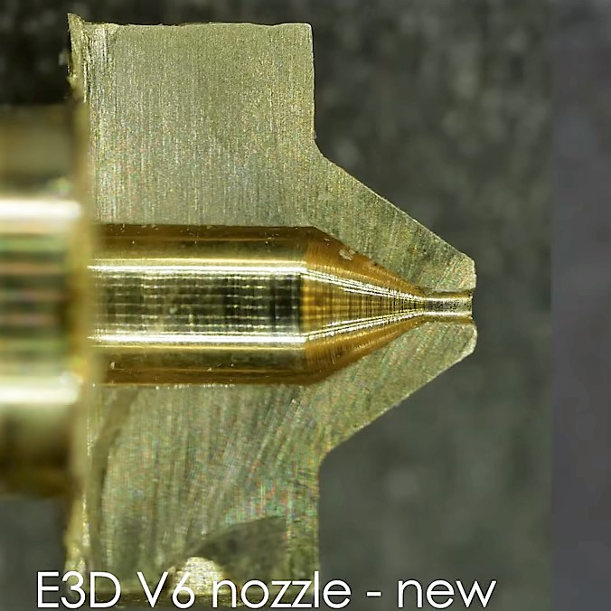- van de 0.2mm a 1mm
- De mejor resolucion y menor flujo de material mientras más bajo sea
- A una mayor velocidad de impresion, altura y ancho de capa mientras más grande sea
- Lo más comun: 0.4mm, Personalmente recomiendo 0.6mm un gran equilibrio entre velocidad de impresion, flexibilidad en la altura y ancho de capa, gran adhesion entre capas y manteniendo una buena presicion.
- Los nozzles mas pequeños tienden a atascarse más
Alto de capa
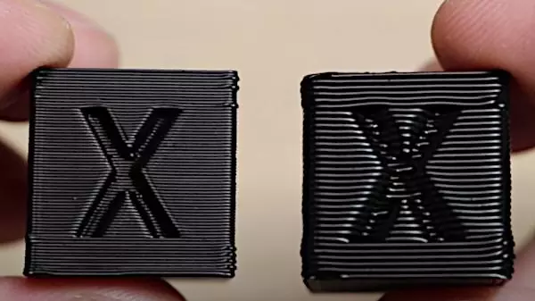- Mientras mas grande el nozzle, nos permitirá mayor altura
- Permitido no es necesario, puede ser un nozzle 0.8 con capas 0.2
- En materiales translucidos, mayor ancho de capa, manteniendo una altura baja, permite tener mejor transparencia (claridad optica )
- Podés aprovechar opciones como altos de capa variables para optimizar tiempos manteniendo la calidad
- Utilizar el 'combinar relleno cada X' en algunos slicer, permite hacer perimetros de 0.2mm de altura y el infill en 0.4mm, reduciendo tiempos sin perder calidad.
El alto y ancho de la línea de impresion depende mayormente del nozzle utilizado, explicado en la sección Layer Width/Height
Los materiales cargados ( con fibra de bambú, fibra de vidrio o ets') desgastan rápidamente los nozzles.
Revisar y tener en cuenta la posible variación de diametro con el tiempo de uso, adaptándose o cambiándolo.
Puentes
Puentes

- Pata de elefante
- Under-extrusion o sobreextrusion
- Steps/mm erróneos
- Corregir con expansion horizontal
Malos puentes

- Aumentar velocidades de bridge y reducir flujo en bridges
- Chequear el angulo usado en el infill del bridge
- Usar algunos soportes en bridges muy largos
descripcion de la seccion descripcion de la seccion descripcion de la seccion descripcion de la seccion descripcion de la seccion descripcion de la seccion descripcion de la seccion descripcion de la seccion descripcion de la seccion descripcion de la seccion
Layer width/height | Ancho/alto de capa
Width/ancho muy bajo
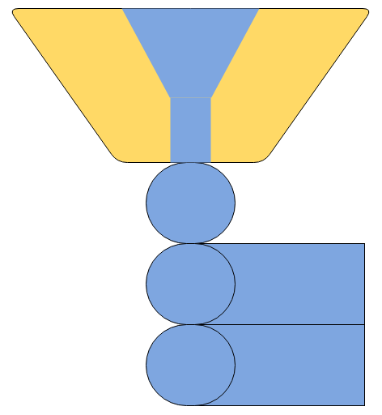- Entre 60% y 100% del nozzle
- Mejores detalles
- Medidas mas precisas
- Aumento del tiempo de impresion
- Menor adhesion entre capas
- Limita el alto de extrusion
Medida ideal
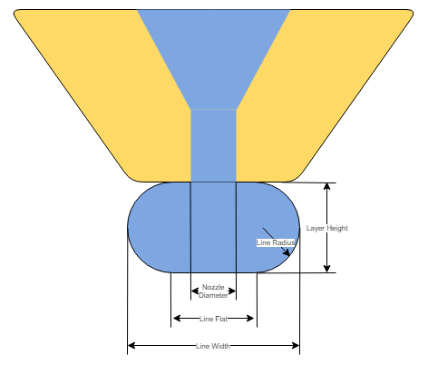- Entre el 90% y 150% del nozzle
- Recomendado alrededor de 120%
- Equilibrio entre tiempo, detalle y adhesion
- Ideal para impresiones normales a complicadas
- La mejor opcion para overhangs
Width/ancho demaciado alto
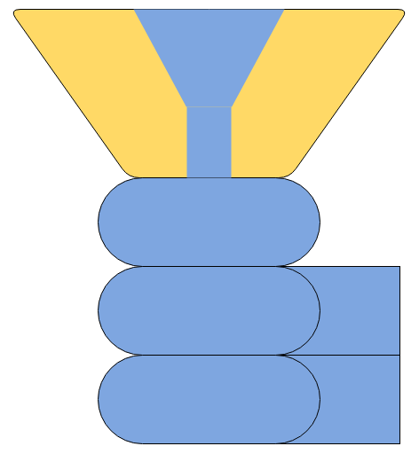- Mayor a 150% del nozzle
- Reduce tiempos de impresion
- Perdida de detalles
- Aumenta la adhesion entre capas
PrusaSlicer posee Arachne ( anchos variables )